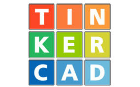
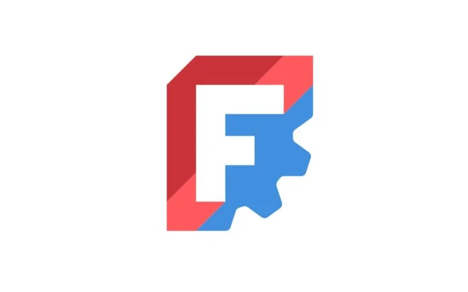
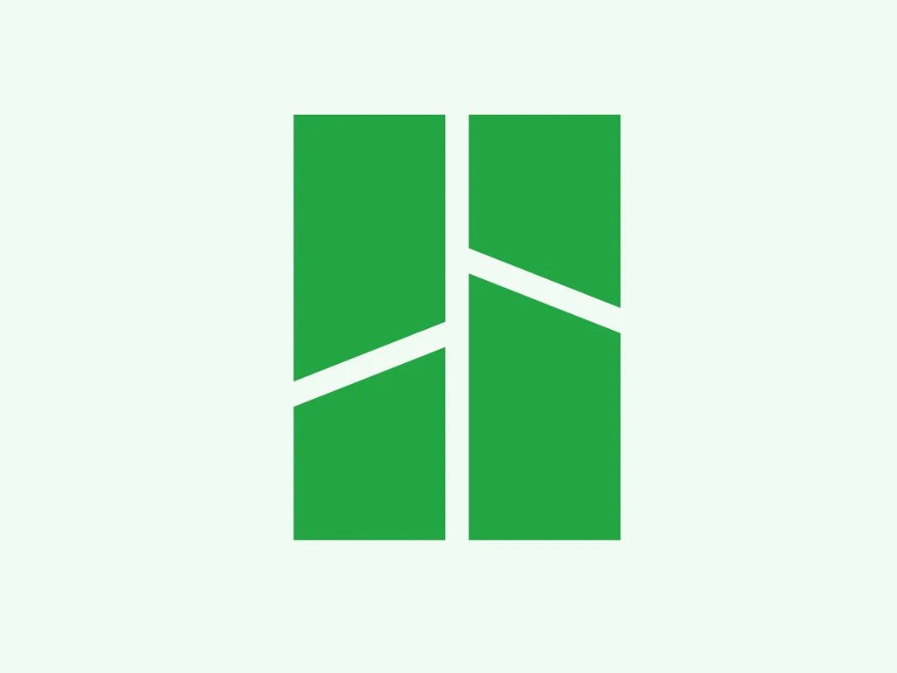

Taller • Impresión 3D • Nika
De tu diseño a la realidad: crea e imprime en 3D
Un recorrido práctico desde una imagen 2D hasta una pieza lista para
imprimir.
En breve comenzamos
Prepárate para conocer el flujo completo de diseño, modelado y
preparación de un llavero para impresión 3D.
Presentación
Nika
Nika es un emprendimiento enfocado en transformar ideas en
soluciones físicas a través de diseño digital e impresión 3D.
Nos especializamos en crear productos personalizados,
prototipos funcionales y piezas adaptadas a necesidades
específicas, acercando la tecnología de fabricación a personas
y negocios.
Diseño digital
Impresión 3D
Personalización
Prototipos funcionales
Presentación
¿Quiénes somos?
Somos un equipo/dúo enfocado en fabricación de modelos físicos
y digitales para todo público que quiera hacer sus ideas en
algo palpable.
- Aprendemos creando
- Trabajamos con herramientas accesibles
- Buscamos soluciones visuales y funcionales
Presentación
¿Qué hacemos?
Diseño 2D
Convertimos ideas visuales en trazos limpios y listos para
producción.
Modelado 3D
Transformamos vectores e ideas en piezas editables y
fabricables.
Impresión 3D
Fabricamos piezas físicas para personalización, prototipos y
proyectos creativos.
Proyectos a medida
Desarrollamos objetos funcionales o decorativos según cada
necesidad.
Introducción
¿Qué es la impresión 3D?
Es un proceso de fabricación en el que un objeto se construye
capa por capa a partir de un modelo digital.
En lugar de cortar material, lo va depositando o solidificando
hasta formar la pieza final.
Introducción
FDM vs Resina
FDM
- Más accesible
- Ideal para piezas funcionales
- Proceso más limpio y sencillo
- Detalle medio
Resina
- Mayor detalle visual
- Buena para piezas pequeñas
- Más limpieza y postproceso
- Mayor cuidado de uso
Introducción
¿Cómo funciona la impresión FDM?
- Un filamento entra al extrusor
- La boquilla lo calienta
- El material se deposita siguiendo trayectorias
- La pieza se forma capa por capa
Todo el proceso parte de un archivo preparado en un slicer.
Introducción
El filamento
Es el material base que usa la impresora FDM. Viene enrollado y
se funde para formar la pieza.
- PLA es uno de los más comunes
- Fácil de trabajar en talleres
- Disponible en muchos colores
Introducción
Las capas
La impresión 3D construye piezas mediante capas muy delgadas
apiladas una sobre otra.
- Menor altura de capa = más detalle
- Mayor altura de capa = más rapidez
- El acabado visual depende mucho de esto
Introducción
Las boquillas
La boquilla es la salida por donde se deposita el material
fundido. Su diámetro influye en detalle y velocidad.
- 0.4 mm es una medida muy común
- Boquillas más finas dan más detalle
- Boquillas más grandes imprimen más rápido
Introducción
Los soportes
Algunas geometrías necesitan estructuras temporales para
sostener partes que quedarían “en el aire” durante la impresión.
- Se usan en voladizos o formas complejas
- Luego se retiran
- Pueden dejar marcas en la superficie
Introducción
El multicolor
También es posible imprimir con más de un color, aunque esto
suele implicar una preparación adicional.
- Sistemas automáticos más avanzados
- Mayor complejidad en el flujo
Meta del taller
Lo que lograrán hoy
Hoy te irás con el conocimiento suficiente para diseñar e
imprimir un llaverito.
Verás el proceso completo desde una referencia visual hasta una
pieza lista para fabricar.
Flujo de trabajo
Del diseño a la impresión
1
Imagen
Referencia visual inicial
→
2
SVG
Vector limpio y editable
→
3
Modelo 3D
Extrusión y volumen
→
4
Slicer
Preparación técnica
→
5
Impresión
Pieza física final
Diseño 2D
¿Qué es Inkscape?
Es un editor de gráficos vectoriales. Nos ayuda a convertir
imágenes en trazos limpios y escalables.
- Ideal para logos y formas simples
- Permite calcar diseños
- Exporta en SVG
Diseño 2D
¿Por qué usamos Inkscape?
Calcar
Pasamos una imagen a una forma más limpia y controlada.
Vectorizar
Obtenemos un archivo que puede escalar sin perder claridad.
Exportar SVG
Ese formato será la base para el modelado 3D posterior.
Diseño 2D
Ejemplo de diseño
Demostración en vivo
Pasemos a diseñar
Ahora iremos a Inkscape para calcar, limpiar el diseño y dejarlo
listo para el siguiente paso.
Demostración en vivo
Exportación a SVG
Guardaremos el diseño en un formato vectorial que después podremos
llevar al software de modelado.
Modelado 3D
Software de modelado 3D

Fusion 360
Muy fuerte en CAD y diseño técnico.

Blender
Versátil, potente y muy útil para este flujo.

Tinkercad
Sencillo y amigable para primeros pasos.

FreeCAD
Opción libre orientada a modelado técnico.
Modelado 3D
¿Por qué escogimos Blender?
- Permite trabajar bien con SVG
- Es muy versátil
- Nos da control sobre la extrusión
- Encaja bien en este flujo de trabajo
Demostración en vivo
Convertir el objeto a editable
Ajustaremos el elemento importado para poder trabajar mejor su forma
y prepararlo para darle volumen.
Demostración en vivo
Extruir
En este paso convertiremos una forma plana en un objeto con volumen
listo para fabricar.
Demostración en vivo
Exportar como STL
Guardaremos el modelo en uno de los formatos más usados para llevar
piezas al proceso de impresión 3D.
Pausa
Receso
Volvemos en unos minutos para preparar el modelo y enviarlo a
impresión.
Slicing
Slicers más usados
OrcaSlicer
Moderno, constantemente actualizado, mayor control y
herramientas.
Cura
Sencillo y básico para principiantes.
PrusaSlicer
Elegante, bastante usado por la comunidad.

Bambu Studio
Herramientas extensas para impresoras de la propia empresa.
Slicing
¿Por qué usamos OrcaSlicer?
- Interfaz moderna
- Buena vista previa del proceso
- Parámetros claros y útiles
- Muy práctico para este taller
- Muchas herramientas versátiles
- Estándar de vanguardia para todo público
Slicing
Parámetros básicos
Relleno
Estructura interna
Velocidad
Tiempo vs calidad
Temperatura
Comportamiento del material
Demostración en vivo
Llenado de parámetros
Ajustaremos los valores necesarios para que el modelo quede listo
para imprimir.
Demostración en vivo
Comenzar a imprimir
Enviaremos el archivo a la impresora. La entrega de las piezas se
realizará después.
Dinámica
GamiExamen
Tendremos un pequeño examen en modo dinámico para reforzar lo
aprendido.
- Participación individual
- Modo dinámico
- Los primeros 3 en sacar 100 reciben premio
Cierre de dinámica
Entrega de premios
Reconocimiento a quienes destacaron en la dinámica.
Gracias por participar, aprender y competir.
Cierre
Preguntas y respuestas
Espacio abierto para dudas, comentarios y conversación sobre diseño
e impresión 3D.